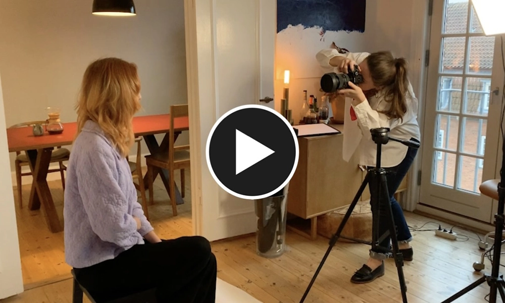

I en verden som fotograf
Et videointerview baseret på ægte følelser og oplevelser
Et videointerview lavet af Julie Gejel
Nielsen
Medvirkenede: Caroline Twile, Julie Gejel Nielsen, Misha Marker
Filmet i 2022
Varighed: 1 min
I dette rørende videointerview kommer vi helt tæt på fotografen Caroline Twile, som fortæller hvad der inspirerer hende og gør hende til den fotograf hun er

Se videoen